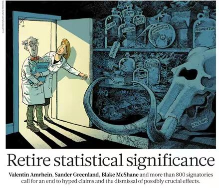

Notion: Hype Significance#
显著你的显著#
（本周打算记录一个发生的小讨论，同时发表一点浅薄的见解）
S：我来考你一个问题（双信封悖论）：两个盒子，一个盒子里装的钱是另一个两倍。现在挑了一个打开发现有100元。主持人问你，你要不要换？
L：随便。直觉感觉没有差别。
S：那我问你另一个盒子的期望是多少？
L：(200+50)/2。看上去要换。
L：等一下，这个期望是怎么来的，样本空间是什么？
S：你说的不对，这个问题有问题。当你认为另一个盒子有50%是200元，50%是50元时候已经默认了（x,2x）是均匀出现的。可是这个问题无法存在一个先验分布。
L：你说得对，无限的\(\mathbb{Z}^+\)上无法定义一个等概率的分布。
L：但是你这么想，当两个盒子钱装好后（固定），我随机选一个，那么(200+50)/2是解释的通的。
S：那我这么想，请问你看到100元获得了什么信息吗？那看到多少钱为什么能作为换不换的依据？
L：从信息论的角度你不对。100确实没有用，但两个箱子有互信息，现在另一个箱子对我有一个条件熵。
S：我不太理解，感觉不是问题的关键。
L：总之我想概率首先并不是一个能简简单单定义下来的东西，这个题目缺失了整个机制发生的背景空间而产生了悖论。
L：当你问出换不换时，肯定是想说哪个行动收益更高——这必须重复实验，那么如何重复就成为了关键，可惜问题没说。比如当两个盒子钱装好后，我还是倾向于那个简单计算，换一个。如果是一个有限区域内随机装入钱，我想就是最开始的回答，没有区别（或者像有些回答套了全概率公式）。
L：我发现这个争论的本质极其类似于传统统计推断里的参数估计，带有哲学色彩。我们都知道有三大流派。如果放到一切（比如这个节目搞了好多遍）金额下，这是Bayes的角度，大家开始强调并追究先验分布。如果是贝叶斯，那我想没必要什么收不收敛，它就有概念叫”广义先验分布“，还经常取1。你的观点跟Fisher是一致的，他的信念学派类似于一个均匀的先验分布，根据测得统计量反导出一个所谓的”信念分布“，于是嚷嚷出了悖论。但，我们最常用的还是Pearson（奈-皮）的理论体系。它的置信区间假定了固定的\(\mu\)，重复的是构造区间的过程。
L：假设检验也一样。我必须假定零假设发生，假定盒子装好（x,2x）之后，我再来讨论统计量的分布。那么我想经过一次轮换和不经过不对称是有道理的，前者的比较起点是第一次手里的钱。但主要提出者Fisher并没有告诉我们零假设发生的概率是多少，就像95%的置信区间从来没说它有95%概率包含\(\mu\)一样。见下。
（知乎上也有不少讨论和更高的视角，可惜我（L）现在不会测度论……）
我不认为完全搞懂了这个悖论，欢迎薄纱。不过这让我想到了之前在返朴公众号上看的一篇文章[1]，正好也指出了L所讲的这件事：How to use significance.

（Nature上发表的联名评论，呼吁摈弃统计显著/不显著的二分思维）
Mindless Statistics 很明显是危险的，公众号里表示其做过的一项调查显示所有受访人群均有80%-90%以上的人无法正确解读P值和CI。
P值无法给出原假设成立的概率，也不应仅仅依靠P值作下论断或判断模型的好坏。过分且片面的追求显著只会招致 p-hacking、publication bias 等等负面现象。
这个被忽视的局限性我想反映的跟双信封悖论相差不大。在Two Envelop Problem里大家cannot accept 125>100 with their Bayes' eyes，却在Hypothesis Testing里hype their significance p<0.05 like a Fisher。